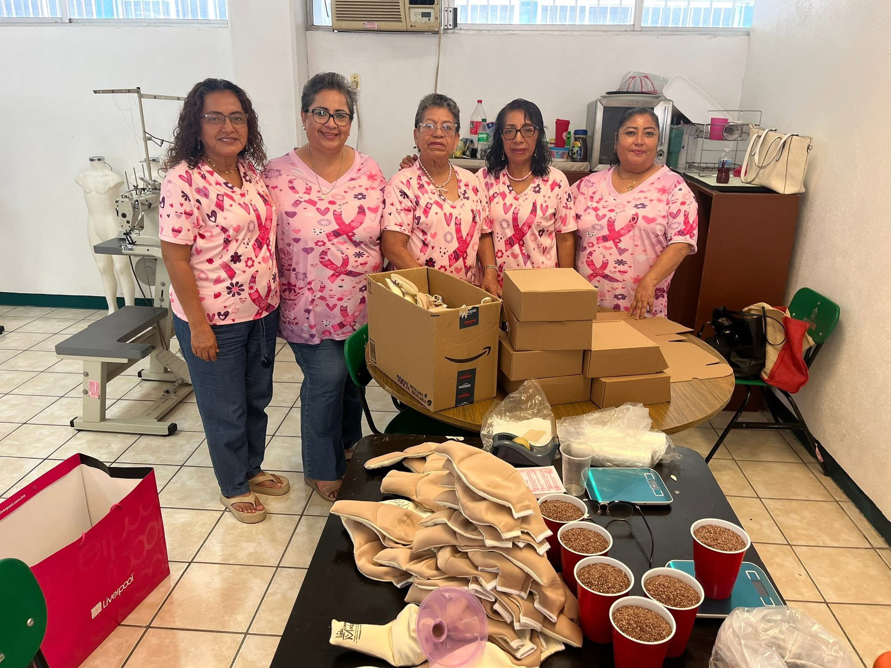
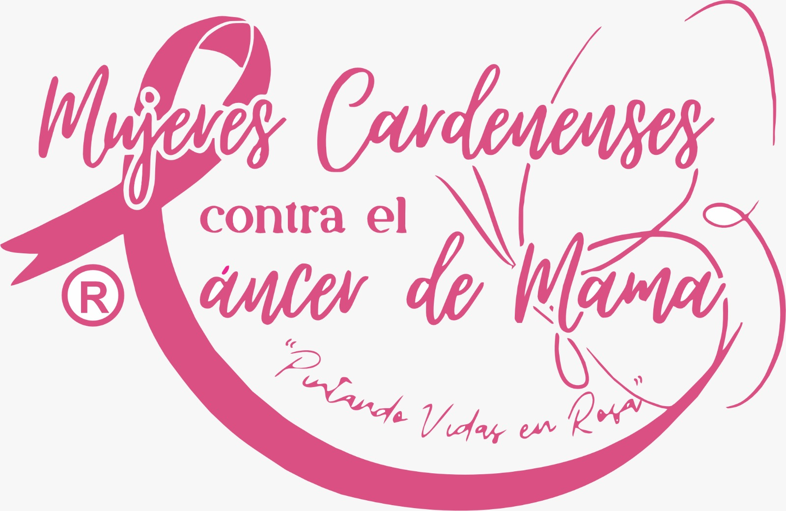

Pintando Vidas en Rosa
El cáncer de mama impacta la vida, la autoestima y la salud emocional de miles de mujeres. Con tu apoyo brindamos rehabilitación de imagen y acompañamiento psicoemocional para que cada mujer recupere su fuerza y esperanza.

Tabasco, México
Somos una Asociación Civil sin fines de lucro, formada en el año 2012 por mujeres de la Sociedad Cardenense, con vocación de servicio y labor altruista, preocupadas y ocupadas por concientizar a la población sobre la importancia de la detección temprana del Cáncer de Mama.
Creemos firmemente que todos tienen derecho a recibir educación sobre la salud mamaria, culturalmente apropiada y adaptada a cada comunidad.
Orientar y apoyar a la población haciéndoles conciencia sobre la importancia de la detección temprana, brindando solidaridad sin discriminación de raza, cultura, creencias religiosas ni ideales políticos.
Ser un grupo reconocido por trabajar arduamente, siendo indicador de calidad, guiando a la población y diversificando actividades para ampliar cada día nuestra oferta asistencial.
personas diagnosticadas con cáncer de mama en México en 2022
mujeres fallecidas por cáncer de mama en 2022
personas viviendo con la enfermedad (prevalentes)
tasa de sobrevida a 5 años en México (estudio 2007–2013)
Fuente: Global Cancer Observatory – OMS
El cáncer y sus tratamientos oncológicos limitan la vida personal, familiar y social de las pacientes. Intervenimos para lograr una nueva imagen corporal y emocional.
El acompañamiento psico-emocional genera un estado de bienestar en cada paciente, ayudándoles a vivir el proceso con más tranquilidad.
Mejoramos la calidad de vida de mujeres con mastectomía radical, brindando herramientas para recuperar su fuerza, esperanza e identidad.
Presidenta y Representante Legal
Consejo Directivo
Socias y Voluntariado
Red de Apoyo
Coordinación Médica
Vinculación
Procuración de Fondos
Colaboradores
Tu donación hace posible que sigamos brindando apoyo a mujeres en su lucha contra el cáncer de mama. Con tu ayuda, podemos ofrecer rehabilitación de imagen, acompañamiento psicoemocional y programas de concientización. Cada contribución, por pequeña que sea, marca una gran diferencia en la vida de estas mujeres valientes.
Donar ahora